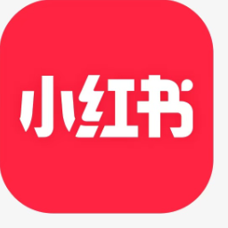
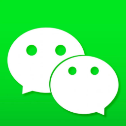
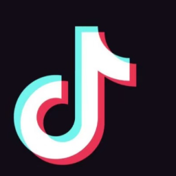
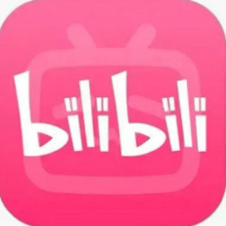
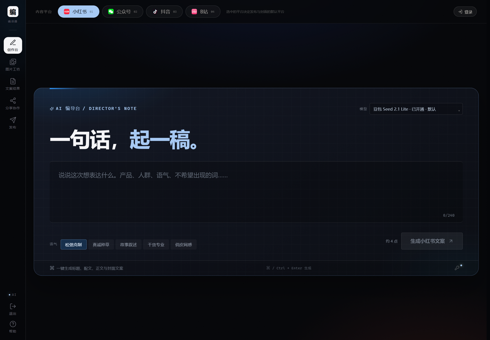
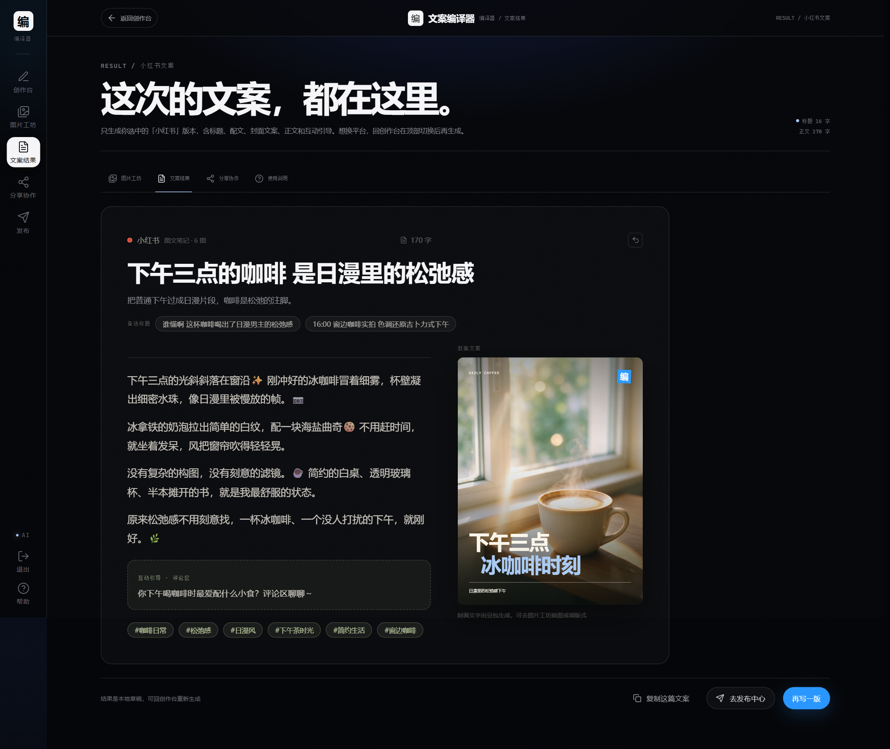

小红书笔记标题 · 正文 · 话题
把想法交给 AI，让一套内容直接落地。




编译结果 · 小红书
用一杯咖啡，接住整个下午的松弛感。
光落在杯垫上的时候，连待办都慢了下来。没有花哨的摆件，只有黑白字母和浅棕的咖啡液。
把想法放进来。
一句交代就够：写清产品、人群、语气。AI 先拆骨架，再适配平台，最后把标题、正文、封面、话题一起编译出来。

编译完成后直接复制，或下载成文件带走。

你的想法。你的 AI。
同一句交代，同一件事。左边是编译台，右边是随手一写。
例子 01 · 交代：咖啡，简约，日漫风格，下午的松弛感
用一杯咖啡，接住整个下午的松弛感。
下午三点，阳光刚好斜斜落进窗台，空气里能看见细小的浮尘。我把冰咖啡从冰箱拿出来，杯壁立刻浮起一层薄薄的水雾，像日漫里被故意放慢的那半帧画面。
没有复杂的构图，也没有刻意摆盘。一张浅色木桌、一只透明玻璃杯、几颗还没化开的冰，加上窗边随手摊开的书，就是这个下午最舒服的布景，连桌角的光斑都像提前设计好的。
入口先是清爽的酸，紧接着一点点回甘慢慢往上走。喝到一半的时候，风把窗帘吹得轻轻晃，光斑也跟着在桌面上挪位置，时间像是被谁悄悄调慢了一档，原本急着处理的事也忽然不那么重要了。
原来松弛感不用刻意去找。不用出门、不用打卡、不用发朋友圈证明自己在休息，只要一杯冰咖啡、一个没人打扰的下午，就够把这一周攒下来的疲惫慢慢化开。
评论区聊聊：你下午喝咖啡时最爱发什么呆？
例子 02 · 交代：护肤新品，平价，学生党，别太夸张
几十块的补水，够撑过换季的干。
换季那两周，脸绷得像被风抽过，笑一下都觉得紧。本来想跟风入大牌，最后还是先拿这瓶平价水乳试了试，想着不行就当代价不大的学费。
老老实实用了一整周才敢说：上脸不刺痛，也不搓泥，早上化妆前拍两层，底妆反而更服帖。成分表很干净，没有把“抗老”“焕亮”这些大字写在包装上，闻起来也没什么香精味。
学生党预算有限，与其分期买一瓶可能用不完的精华，不如把最基础的保湿做扎实。皮肤状态稳了，再去谈其他功效，才不算浪费钱。
当然它也不是万能的，痘印、细纹该没有还是没有。但如果你只是换季干、起皮、上妆卡粉，先把补水这一步补上，比什么都实在，也比盲目堆产品更省钱。早晚各一次，一瓶能用两个多月，算下来一天不到两块钱，比一杯奶茶还便宜。
评论区聊聊：你们换季最离不开哪一步？
例子 03 · 交代：独立书店，周末活动，想写得温柔一点
把两小时交给一本书，也交给自己。
周六晚上七点，城市的声音慢慢降下来，二层的灯还亮着。靠窗的位置是特意留的，桌上摆着一盏小台灯、一杯温水，还有一沓随手可以取用的便签纸。
不用报名，不用签到，也没有指定的必读书目。带一本读到一半的书来，从哪一页翻开都行。有人读小说，有人翻画册，也有人只是坐着发呆，把手机调成静音，放进包里。
没有讲座，没有打卡任务，没有人催着你分享读后感。想说话的时候，隔壁桌的人会接上一句；不想说话的时候，就安静地待着，谁也不会觉得奇怪，热水没了自己去倒。
两个小时过去，书可能只翻了几页，但心里那根一直绷着的弦悄悄松了。原来周末也可以不赶场子、不追进度，把时间交给一本书，也交给自己。离开的时候不用打招呼，把水杯放回架子上就好，下次还会想来。
评论区聊聊：你上一次完整读完一本书是什么时候？
不用编译台的版本 · 同一句交代
今天下午喝了一杯咖啡，真的很好喝，颜色也很好看，简约风很大气，喜欢的朋友可以试试，喝完心情很好，推荐给大家！
问题：没有标题结构、没有配文、没有话题、没有互动引导，平台适配为零。
首次使用需要填一个火山方舟 API Key（Key 只存本机，不经过任何服务器）。
这一版自己完整跑过一遍，下面是真实存在的限制，不藏着。
不包装参数，这里就是实际接入的模型。
Key 只保存在本机浏览器或本地服务，不上传、不进仓库。